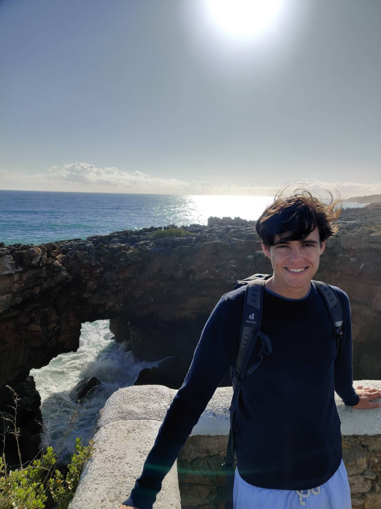

Sam Frengley

Email: sam (dot) frengley (at) bristol (dot) ac (dot) uk
 https://orcid.org/0000-0002-8904-6253/
https://orcid.org/0000-0002-8904-6253/
 https://arxiv.org/a/0000-0002-8904-6253/
https://arxiv.org/a/0000-0002-8904-6253/
 https://github.com/SamFrengley/
https://github.com/SamFrengley/
About me
Hi, I am a postdoc at the University of Bristol. Previously I was a PhD student at the University of Cambridge where my supervisor was Tom Fisher. I am originally from New Zealand and previously held a Woolf Fisher Scholarship.
My research interests are in arithmetic geometry and number theory, including computational aspects.
Publications and preprints
-
Galois groups of low dimensional abelian varieties over finite fields,
-
On the geometry of the Humbert surface of square discriminant,
-
Explicit 7-torsion in the Tate-Shafarevich groups of genus 2 Jacobians,
-
Generic models for genus 2 curves with real multiplication,
-
Appendix A: An example with 7-torsion in Ш,
-
joint with Timo Keller and Michael Stoll,
-
appendix to Timo Keller and Michael Stoll, Complete verification of strong BSD for many modular abelian surfaces over Q,
-
preprint, arXiv:2312.07307. [arXiv]
-
An algorithm for efficient detection of (N,N)-splittings and its application to the isogeny problem in dimension 2,
-
On 12-congruences of elliptic curves,
-
Congruences of elliptic curves arising from non-surjective mod N Galois representations,
-
Explicit moduli spaces for curves of genus 1 and 2,
BibTex for the above papers (or as a .bib file).
Software
-
humbert
-
This package is attached to my paper "On the geometry of the Humbert surface of square discriminant" but provides more functionality than is required there. It provides some functionality to depict intersections of divisors on Hilbert modular surfaces of square discriminant.
-


Slides
-
Splittings and the isogeny problem in dimension 2,
-
On the geometry of the Humbert surface of square discriminant,
-
Joint Meeting of the NZMS, AustMS and AMS, December 2024. [Slides]
-
An algorithm for efficient detection of (N,N)-splittings and its application to the isogeny problem in dimension 2,
-
On the geometry of the Humbert surface of discriminant N2,
-
N-congruences between quadratic twists of elliptic curves,
-
ℓ-adic Galois representations and Weil-Deligne representations,
If you've seen me talk and there were no slides, send me an email and I can give you the notes I was working off.
Teaching
Reading groups
-
Bhargava's proof of van der Waerden's conjecture,
Misc
-
Some Magma I find useful sometimes:
-
Some code which relates LMFDB and Cremona labels in Magma.
-
It can be nice to automatically attach your personal intrinsics. This can be done with user startup specification files. You can e.g., create a
~/.global_spec spec file, followed by adding the command export MAGMA_USER_SPEC="~/.global_spec" to your .bashrc file.
-
Check out Maths Craft, if you're based in New Zealand they run events, and in any case they have some fun resources.
-
A record which remains standing from the first test match.